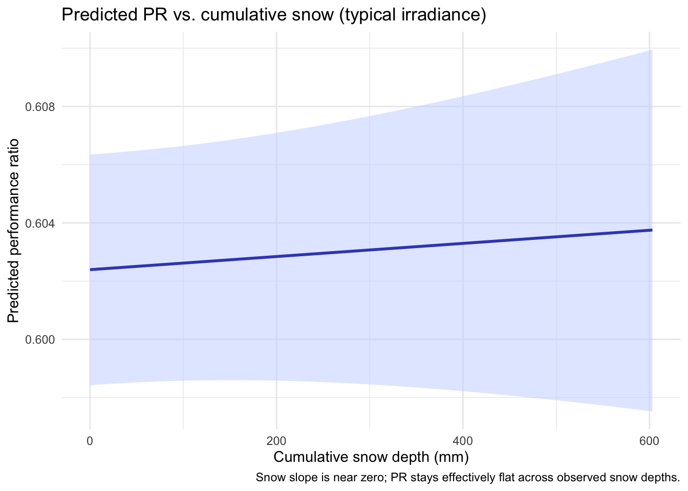
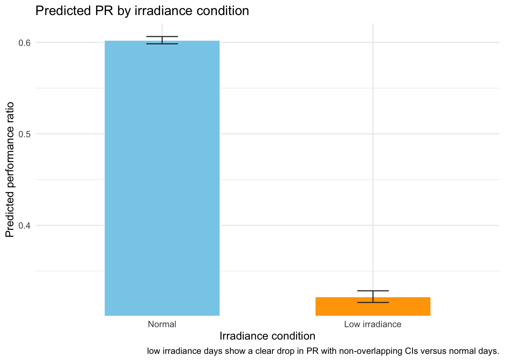

#Load required packageslibrary(tidyverse) # Data wranglinglibrary(readxl) # Read Excel source fileslibrary(janitor) # Clean nameslibrary(betareg) # Beta regression fittinglibrary(broom) # Tidy model outputslibrary(kableExtra) # Pretty tableslibrary(ggdag) # DAG plottinglibrary(ggplot2) # Graphing
Purpose
This blog post builds on Jackson & Gunda’s (2021) machine learning and random forest analysis of United States solar systems, who showed how weather events, especially snow, can reduce photovoltaic (PV) performance measured as PR (performance ratio). This goal of this analysis is to use a simple beta regression model to link daily performance ratio (PR) to cumulative snow depth, low irradiance conditions, and solar plant age/region effects.
References:
Jackson, N. D., & Gunda, T. (2021). Evaluation of extreme weather impacts on utility-scale photovoltaic plant performance in the United States. Applied Energy, 302, 117508. https://doi.org/10.1016/j.apenergy.2021.117508
Data
The entire data set can be downloaded through the Open Energy Data Initiative (OEDI).
The dataset comes processed by Jackson & Gunda, the variables used in this analysis are from two sources. Production data records are from Sandia’s PV Reliability, Operations, and Maintenance (PVROM) database—50,000+ tickets across 837 sites. PVROM also includes commissioning dates which are used to calculate age and PV climate zones. Irradiance data were augmented by Jackson & Gunda with open-access weather from NOAA Storm Events, PRISM, and GHCN for 2008–2020.
Code
vars_of_interest <-tribble(~`Variable name`, ~`Analysis Name`, ~`Description`,"PR", "PR", "Performance ratio as defined by IEC 61724","NOAAClimRegion", "Region", "NOAA climate region (factor)","cumulative_snow_mm","Snow","Cumulative total snowfall since the start of the snow event (mm)","low_irradiation", "LowIrr", "Binary indicator if irradiance is categorized as low","plant_age_months", "Age", "Number of months since commissioning")vars_of_interest |>kable(caption ="Variables used in this analysis") |>kable_styling(full_width =FALSE)
Variables used in this analysis
Variable name
Analysis Name
Description
PR
PR
Performance ratio as defined by IEC 61724
NOAAClimRegion
Region
NOAA climate region (factor)
cumulative_snow_mm
Snow
Cumulative total snowfall since the start of the snow event (mm)
low_irradiation
LowIrr
Binary indicator if irradiance is categorized as low
plant_age_months
Age
Number of months since commissioning
Directed Acyclic Graph (DAG)
We make a DAG to understand how our variables might interact with each other in order to form a hypothesis and fit our model.
The DAG explains our causal story for photovoltaic performance. Region shapes local climate, influencing both snowfall and low irradiance conditions, and may also reflect regional baseline differences in PR (installation practices, maintenance norms). Snow and low irradiance directly reduce PR by reducing light or covering panels. Plant age captures aging and wear that also reduce PR over time. Together, the graph matches our hypothesis: after accounting for plant age and regional differences, cumulative snow depth and low irradiance are expected to lower the performance ratio.
Hypothesis
After accounting for plant age (Age) and regional differences, cumulative snow depth and low irradiance (LowIrr) will reduce the performance ratio (PR) of photovoltaics.
Null hypothesis (\(H0\)): \[
\beta_{\text{Snow}} = 0 \ \text{and}\ \beta_{\text{LowIrr}} = 0
\] (no effect of snow or low irradiance on PR)
Here, \(\mu_i \in (0,1)\) is the mean after transforming the linear predictor through the logit, and \(\phi\) (phi) is the precision parameter (larger \(\phi\) means less variance, more precise). Region effects capture geographic differences across locations, while Snow, LowIrr, and Age quantify how environmental conditions and plant age shift the expected proportion.
Data wrangling
First we load our data, then prepare the performance ratio (PR) for beta regression by restricting values to (0, 1) which is an assumption of the model. We drop the 457 rows with PR ≥ 1 out of 51,504 total (~0.009, so minimal impact). Then nudge exact zeros to a tiny positive value so they remain in the model, as a 0 means no photovoltaic output. PR was calculated by Jackson and Gunda following EC 61724 and is effectively a percentage of a theoretical maximum—so values above 1 indicate anomalies (e.g., underestimation of the plant’s theoretical output, instrumentation or data errors, or a single nonrepresentative point where the array appears to outperform its rating), therefore for the purposes of this model we remove values 1 or greater.
Before running the model on our data, we simulate from the beta regression to verify that our fitted model can return parameters we chose. This gives us a unambiguous test before trusting the model on real environmental data.
Recalling our fitted model, we choose parameters and predictors. Set coefficients and a phi (precision parameter of the Beta distribution) that controls variance around the mean to ensure realistic ranges for our simulation predictor values.
Code
# Choose parameters and predictors set.seed(123)n <-400beta0 <--1.0# interceptbeta1 <-0.003# effect per mm snowbeta2 <--0.8# low irradiation indicatorbeta3 <-0.02# per month of plant agephi <-30# precision (larger = less variance)region_eff <-c(north =0.0, # baselinesouth =0.3,east =-0.2,west =0.1)# Simulate predictorsSnow <-runif(n, 0, 500) # cumulative snow in mmLowIrr <-rbinom(n, 1, 0.35) # 0/1 indicatorAge <-runif(n, 6, 36) # plant age in monthsRegion <-sample(names(region_eff), n, replace =TRUE)
Next we will generate responses. Build the linear predictor, inverse-logit to get μ, then sample PR from \(Beta(μ·phi, (1−μ)·phi)\).
Code
# Generate response from the beta modellinpred <- beta0 + beta1 * Snow + beta2 * LowIrr + beta3 * Age +unname(region_eff[Region])mu <-plogis(linpred) # inverse-logit to keep (0,1)shape1 <- mu * phishape2 <- (1- mu) * phiPR <-rbeta(n, shape1, shape2)sim_df <-tibble( PR, Snow, LowIrr, Age,Region =factor(Region, levels =names(region_eff)))
Fit the Beta regression model using our simulated data. Use betareg with the same formula and link to estimate coefficients and precision.
Code
# Fit the beta regression sim_fit <-betareg( PR ~ Snow + LowIrr + Age + Region,data = sim_df,link ="logit")
Now we can check our simulated estimates. Present tables comparing true vs. estimated coefficients and true vs. estimated phi; good alignment indicates the model and simulation are coherent.
Our simulated results show estimated coefficients very close to our true values (e.g., snow ~0.003, LowIrr ~–0.79 vs –0.80, Age ~0.022 vs 0.020, region contrasts within ~0.02–0.03 of truth), and the precision parameter is essentially on target (φ̂ ≈ 30.54 vs 30). This alignment shows the model can retrieve known effects and variance from data with similar signal-to-noise, giving us a clear go ahead to fit real observations.
Fit beta regression
Now that we confirmed our model works properly, we can fit the Beta regression with our real data. As a reminder, the model includes cumulative snowfall (cumulative_snow_mm), an indicator for low irradiation (low_irradiation), plant age in months (plant_age_months), and region effects (region) to capture geographic differences.
The strongest effect comes from low irradiation: a logit shift of about −1.16 (p < 0.001), meaning low irradiance days substantially reduce PR.
Age also pulls PR down (−0.01 per month, p < 0.001), indicating performance degrades as plants age.
Snow is not statistically significant (p = 0.58) in this model, suggesting snow depth alone isn’t explaining PR changes once irradiation, age, and region are included.
Region effects show meaningful baseline differences: Northwest and Southwest are lower than the reference region; Ohio Valley, Southeast, and West are higher; Upper Midwest is lower. The precision parameter (phi) is well-estimated (1.57, p < 0.001), indicating reasonable dispersion fit.
Predictions
Because the betareg package won’t give a standard error (SE) (se.fit) via the predict() function, we build the 95% confidence intervals ourselves on the link (logit) scale using our model coefficients standard errors.
The idea is using Walds logic: add/subtract 1.96×SE to the linear predictor, then map through the inverse logit. For each coefficient, the upper-limit is \(\beta_1\) + 1.96*SE; multiplied by our simulated predictor values (LowIrr). We repeat that for each linear predictor and lower-limit then propagate uncertainty by combining the design matrix with the covariance-matrix to get its SE. Lastly, we convert both the means and the bounds back to prediction space. Now we have a function to use for our prediction grids.
Code
# Use the fitted model’s factor coding, coefficient vector, and covariance matrix so new predictions use the same encoding.mm_orig <-model.matrix(beta_fit)contr_orig <-attr(mm_orig, "contrasts")beta_mean <-coef(beta_fit, model ="mean")beta_names <-names(beta_mean)vc_mean <-vcov(beta_fit, model ="mean")# Rebuild the design matrix for the new grid with those contrasts and align columns to the stored coefficient order.predict_with_ci <-function(fit, newdata) { tt <-delete.response(terms(fit)) X <-model.matrix(tt, newdata, contrasts.arg = contr_orig)# Align columns to coefficient order X <- X[, beta_names, drop =FALSE]#Compute the linear predictor eta <-as.vector(X %*% beta_mean)#Compute its standard error from X V Xᵀ: take the diagonal and square-root to get one SE per row. se <-sqrt(rowSums((X %*% vc_mean[beta_names, beta_names, drop =FALSE]) * X))# Make 95% Wald limits on the link scale (eta ± 1.96*SE) and pass fit/low/high through plogis to get PR-scale predictions and bounds.tibble(pred_pr =plogis(eta),pred_pr_lo =plogis(eta -1.96* se),pred_pr_hi =plogis(eta +1.96* se) )}
Because we are holding region constant in our model while varying snow or irradiance we need to pick a Region to use as a reference for our predictions. We choose the region with the most data to make the plotted effects reflect typical conditions rather than being driven by a factor level with few observations.
Code
# Reference region (most available data)region_ref <- beta_df |>count(region, sort =TRUE) |>slice(1) |>pull(region)
Code
# Grid for snow effectsnow_grid <-tibble(cumulative_snow_mm =seq(0,quantile(beta_df$cumulative_snow_mm, 0.95, na.rm =TRUE),length.out =120 ),low_irradiation =0,plant_age_months =median(beta_df$plant_age_months, na.rm =TRUE),region =factor(region_ref, levels =levels(beta_df$region)))snow_grid <-bind_cols(snow_grid, predict_with_ci(beta_fit, snow_grid))# Plot for snow effectp_snow <- snow_grid |>ggplot(aes(cumulative_snow_mm, pred_pr)) +geom_ribbon(aes(ymin = pred_pr_lo, ymax = pred_pr_hi),fill ="#c7d4ff", alpha =0.5) +geom_line(color ="#3b4cc0", linewidth =1) +labs(title ="Predicted PR vs. cumulative snow (typical irradiance)",x ="Cumulative snow depth (mm)",y ="Predicted performance ratio",caption ="Snow slope is near zero; PR stays effectively flat across observed snow depths." ) +scale_y_continuous(labels = scales::number_format(accuracy =0.001)) +theme_minimal()# Grid for low irradiance effect irr_grid <-tibble(low_irradiation =c(0, 1),cumulative_snow_mm =median(beta_df$cumulative_snow_mm, na.rm =TRUE),plant_age_months =median(beta_df$plant_age_months, na.rm =TRUE),region =factor(region_ref, levels =levels(beta_df$region)))irr_grid <-bind_cols(irr_grid, predict_with_ci(beta_fit, irr_grid)) |>mutate(low_irradiation =factor(low_irradiation, labels =c("Normal", "Low irradiance")))# Plot for low irradiance effectp_irr <- irr_grid |>ggplot(aes(low_irradiation, pred_pr, fill = low_irradiation)) +geom_col(color ="white", width =0.55) +geom_errorbar(aes(ymin = pred_pr_lo, ymax = pred_pr_hi), width =0.15, color ="#2f2f2f") +scale_fill_manual(values =c("skyblue", "orange")) +labs(title ="Predicted PR by irradiance condition",x ="Irradiance condition",y ="Predicted performance ratio",caption ="low irradiance days show a clear drop in PR with non-overlapping CIs versus normal days." ) +coord_cartesian(ylim =range(c(irr_grid$pred_pr_lo, irr_grid$pred_pr_hi))) +theme_minimal() +theme(legend.position ="none")p_snow

Code
p_irr

Discussion
Our hypothesis was that, after accounting for plant age and regional differences, both cumulative snow depth and low-irradiance conditions would lower the performance ratio (PR). The beta regression results partly support this:
Low irradiance: Strong, highly significant negative effect (logit shift ≈ −1.16). This is the main predictor of reduced PR, aligning with the idea that cloudy/low-light days reuce output.
Cumulative snow: Not statistically significant once irradiance, age, and region are included; in this formulation, snow depth alone does not explain additional PR loss.
Plant age: Negative and significant (≈ −0.01 per month), indicating gradual performance decline as systems age.
Region effects: Meaningful baseline differences across regions remain, capturing geographic or operational factors outside the weather covariates.
Therefore, we reject the null for low irradiance. We fail to reject the null for cumulative snow depth. Considering both, we fail to reject the null that both cumulative snow depth and low-irradiance conditions would lower the performance ratio.
Limitations:
Beta regression requires 0 < PR < 1; we nudged low boundary values and removed high boundary values.
Snow depth is treated linearly; nonlinear or event-based snow features as included in Jackson & Gunda`s model.
Future work (time series):
The next step I would like to take is to explore simple time-series models—e.g., AR(1)/ARIMA with weather events in order to test whether recent snow, low irradiance, or storms predict near-term drops in PR beyond same-day effects. Adding lagged weather terms and comparing regions would show if lead/lag patterns can flag performance risk before it hits, complementing the beta regression’s same-day focus.
Acknowledgments
This project was part of EDS 222 Statistics for Environmental Data Science, a course in the Master of Environmental Data Science (MEDS) program at the Bren School at UC Santa Barbara.
I would like to thank Max Czapanskiy for his masterful patience and pedagogical ability, Nathan Grimes for his deeply insightful and constructive feedback and them both for the wonderful instruction of this course and guidance through this final project.